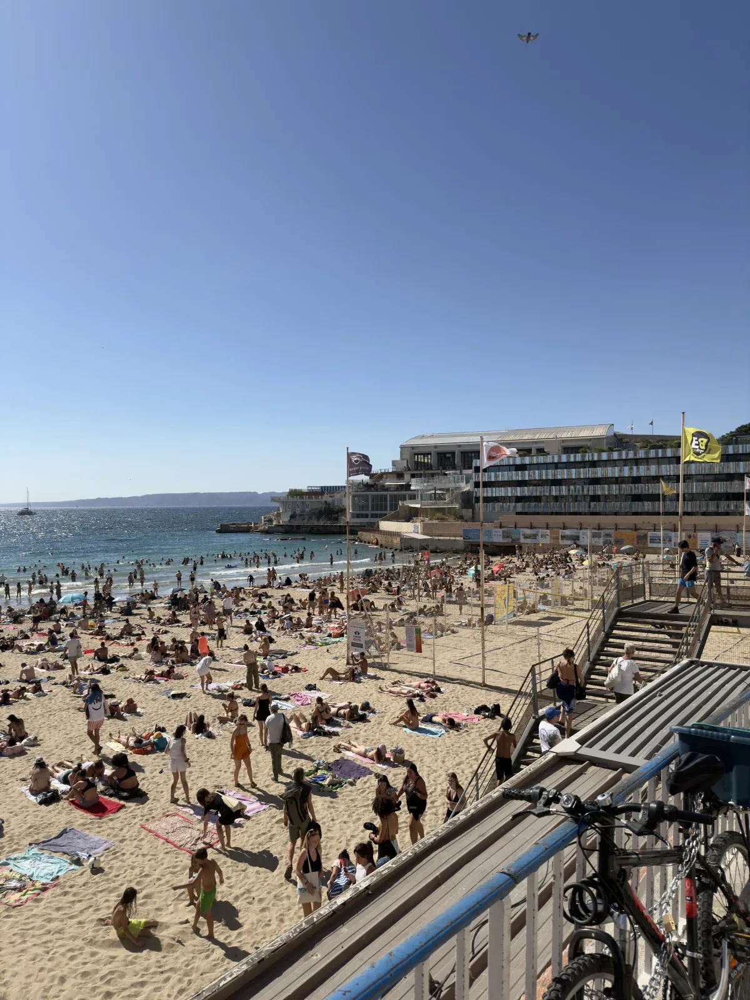

Entre Saint-Victor, le Pharo et les Catalans, la valeur ne se résume pas à la proximité de la mer. Elle dépend de la rue, de l’immeuble, de l’étage, du bruit, de la vue, de l’accès, de l’usage quotidien et du type d’acquéreur capable de se projeter.
Ce secteur du 7e arrondissement combine centralité, image, mer, accès au centre et usages très différents. Un appartement peut être lu comme résidence principale, pied-à-terre, bien patrimonial ou investissement, mais chaque usage modifie la perception de valeur.
La proximité du Vieux-Port, du Pharo, des Catalans ou des axes littoraux peut attirer. Mais elle doit être confrontée au bruit, à l’immeuble, au stationnement, à la lumière, à l’étage et au confort réel du logement.

La mer peut créer une forte envie. Mais une vue partielle, une exposition bruyante, une circulation forte ou un accès compliqué peuvent modifier la lecture. À l’inverse, un bien calme, lumineux, bien tenu et facile à vivre peut mieux soutenir son prix qu’une adresse simplement séduisante.
L’enjeu n’est pas de répéter que le secteur est recherché. L’enjeu est de savoir si le bien réel tient la promesse que le secteur laisse imaginer.
Un acquéreur qui cherche une résidence principale ne lit pas le quartier comme un acquéreur qui cherche un pied-à-terre. Les critères changent : stationnement, bruit, charges, étage, ascenseur, proximité des usages, entretien de l’immeuble, sécurité de la copropriété et capacité à habiter réellement le logement.
La même adresse peut donc produire des réactions différentes selon la cible. Une estimation fiable doit relier la valeur au type d’acquéreur probable, pas seulement au nom du secteur.
Avant de fixer un prix, il faut relire la rue, le tronçon, l’immeuble, l’étage, l’ascenseur, la lumière, le calme, le bruit, la vue, l’extérieur, le DPE, la copropriété, le stationnement, les travaux et la concurrence active.
Le prix défendable dépend de l’ensemble. Une centralité forte peut soutenir la valeur, mais elle ne compense pas toujours une mauvaise exposition, un immeuble fragile ou un usage quotidien trop contraint.
Les données publiques peuvent aider à cadrer une première lecture : ventes passées, DVF, DPE existants, cadastre, environnement bâti. Mais elles ne disent pas toujours la qualité de la vue, la réalité du bruit, la tenue de l’immeuble, l’usage possible du bien ou la manière dont un acquéreur réagit pendant une visite.
Les données donnent une base. La lecture terrain donne le sens. Dans ce secteur, elle permet de distinguer une adresse forte d’un bien réellement cohérent avec son prix.
Saint-Victor, Pharo et Catalans demandent une lecture fine : centralité, mer, usage et contraintes doivent être relus ensemble avant de croire une valeur.
Avant de vendre, un premier échange peut permettre de relire la rue, la vue, le bruit, l’immeuble, l’usage, la cible acquéreur et la cohérence du prix envisagé.